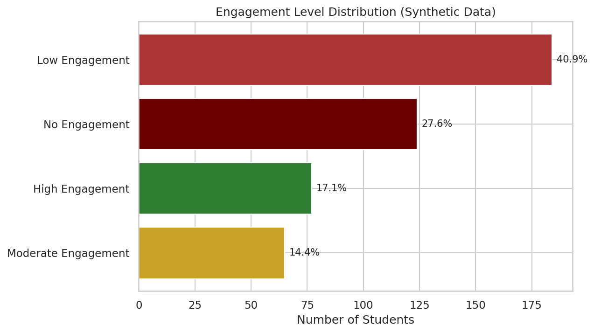
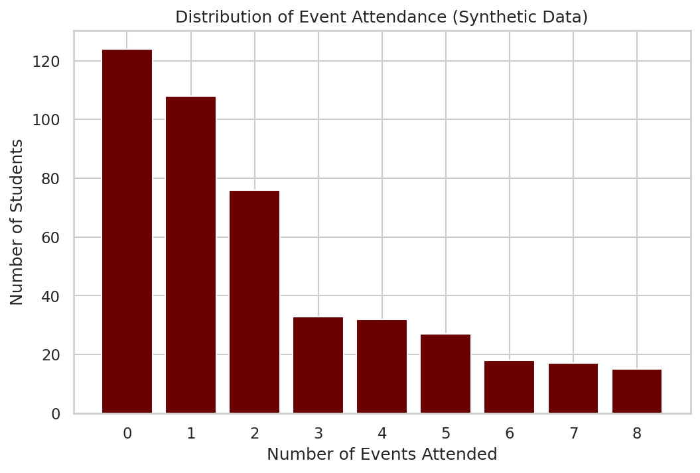

Student Engagement Analytics Pipeline
An automated Python pipeline that replaced a fully manual, semester-end reporting process for a university Student Engagement office.
A note on the data: every number, chart, and student record in this case study is synthetically generated. The real version of this tool runs on actual student records, which are not public. Because the synthetic data is randomly generated, none of the patterns shown below reflect real relationships between, say, housing type and engagement — they're sampling noise from a random seed, not a discovery. What's real here is the pipeline, the methodology, and the deliverable it produces. This case study is a demonstration of the tool, not a report of findings.
The Problem
The Student Engagement office needed a recurring answer to a practical question: who is engaging with campus events, who isn't, and where should outreach be targeted? Previously, answering that meant hours of manual work every semester — pulling a roster, cross-referencing it by hand against sign-in sheets from each event, and manually building breakdowns by class year, housing, major, and other demographics in a spreadsheet.
I identified this as a posting through the university's micro-internship program, proposed a solution, and was selected and compensated to build it.
What I Built
An end-to-end Python pipeline that:
- Ingests a student roster and a set of per-event sign-in sheets
- Joins and counts attendance per student across every tracked event
- Breaks down participation across 10+ dimensions — class year, housing type, residence hall, major, race/ethnicity, gender, first-generation status, Pell Grant status, and athlete status
- Flags engagement level for every student on the roster (new capability — see below)
- Outputs a multi-sheet Excel workbook, the actual institutional deliverable staff use, plus a set of charts for reporting
The original tool this replaced was a manual Google Sheets / Apps Script process. This pipeline mirrors its output structure so staff didn't have to relearn anything, while automating the labor and adding a capability that didn't exist before.
The Engagement Flag: A Design Decision, Not Just a Feature
The original tool was purely descriptive — counts and breakdowns, nothing that told staff who to act on. I added a rule-based engagement flag so the tool could surface which students may be disengaging, not just how many people showed up in total.
Every student is flagged using fixed event counts, not percentages:
- No Engagement — attended 0 events
- Low Engagement — attended 1–2 events
- Moderate Engagement — attended 3–4 events
- High Engagement — attended 5+ events
I chose counts over percentages deliberately. With a small number of tracked events per semester, percentage thresholds shift meaning depending on how many events happened to be tracked that term — 2 of 8 events attended is 25%, but 2 of 15 events is 13%, even though the student's real-world behavior is identical. Fixed counts give a stable rule that means the same thing every semester, and is easy for non-technical staff to explain and act on: "attended at least 3 events this semester."
The flag is intentionally rule-based rather than a predictive model, so the logic is fully auditable by any staff member reviewing the output — the right tradeoff for an institutional reporting tool where the output can influence outreach decisions about real students.
Sample Output
The charts below show the pipeline's output format, generated from synthetic data for this public demonstration.
Where students land on the engagement flag — this is the new capability the original tool didn't have:

How many events students attended, across the full roster (including the zero-event group — the most actionable segment for outreach):

Engagement flag broken down by class year, so staff can see whether disengagement clusters in a particular cohort:

The pipeline also breaks participation down by residence hall, major, commuter status, and demographic categories including first-generation and Pell Grant status — all delivered as sheet tabs in the exported Excel workbook, ready for staff to filter and act on directly.
Impact
- Reduced semester-end processing time by an estimated 80%, replacing a manual cross-tabbing process with a single pipeline run
- Added a capability that didn't exist in the original tool — the engagement flag gives staff a direct, actionable list instead of just raw counts
- Adopted for ongoing use by university leadership across future semesters
- Documented the full system so non-technical staff can run and maintain it independently
Tools used: Python, pandas, matplotlib, seaborn, openpyxl, Faker (for synthetic data generation).